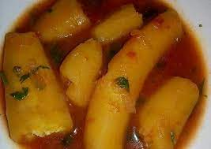
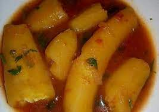
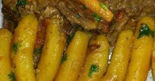

Matoke/amatoke and beef stew
Description
Matoke(Amatoke) is a traditional Abagusii meal
Abagusii is one of the 42 tribes in Kenya
Matoke is prepared from unwripe bananas. See below image of the unwripe banana and matoke
 

Ingredients
- 1 bunch bananas
- 3 tomatoes, chopped
- 1 onion, chopped
- carrots, chopped and washed
- dhania
- 1 TBS salt
- cooking oil
- 500 g beef, chopped into pieces and washed
- curry powder
Steps
- Smear oil on your and peel the bananas. The oil helps your hands not to get sticky liquids
from the bananas.
- Put the beef in a cooking pot with a pinch of salt and add one cup of water, then place
over heat and cover. then let it boil for 30 minutes till its tender.
- Drain the soup that is remaining and put aside, preserve it for soup later. Add oil
in the meat and heat for a as you stir to mix then add onion. let the onions fry with the meat for 3
minutes and add tomatoes and carrots, stir to mix then cover to simmer until the tomatoes have soften.
- Add the bananas to beef and stir. add the preserved soup if not enough, add some water with
some salt, dhania and curry powder. Cover then let it simmer for 15 or until the bananas are soft.
- Remove from heat and serve
